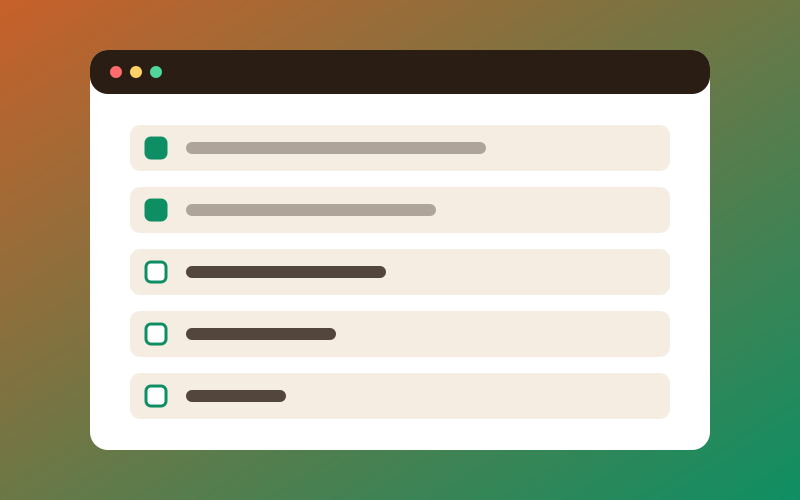

Academic Planner
A task manager for students. Add tasks, tick them off and delete them. Tasks are saved in the browser.
HTMLCSSJavaScriptWhat this project shows
- Arrays to store and sort tasks
- DOM updates every time a task changes
- Browser storage so tasks survive a refresh